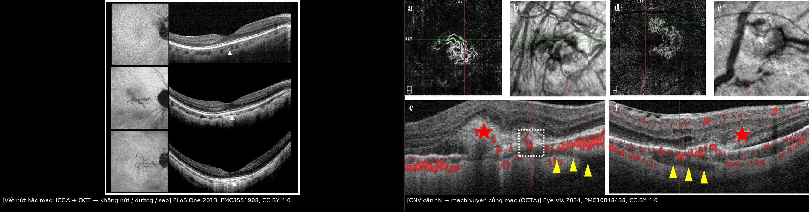
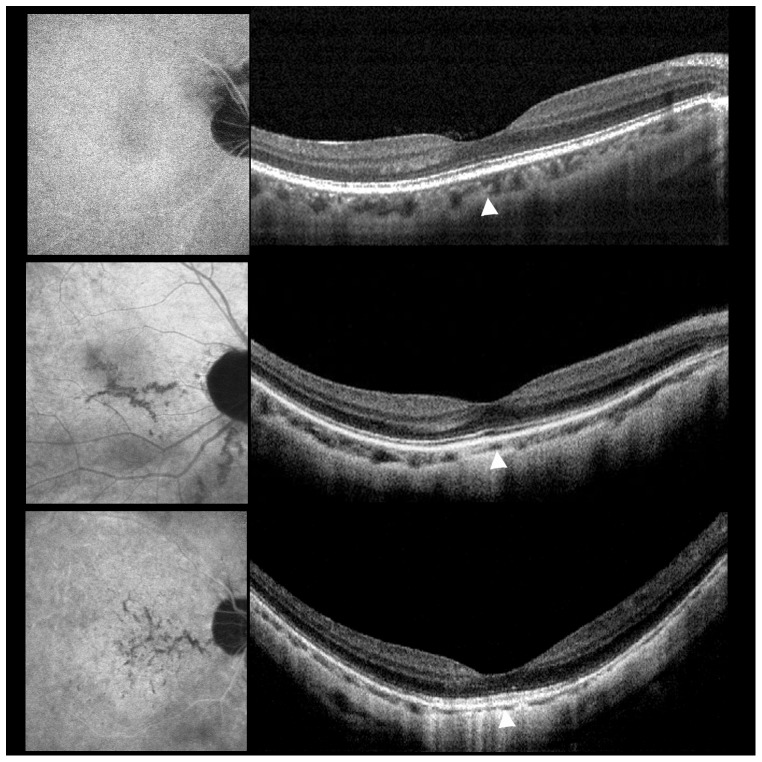
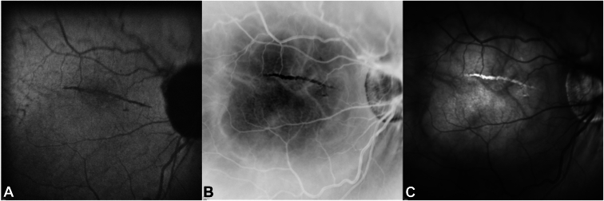
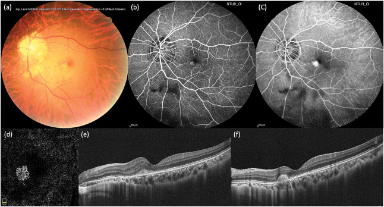

1513 — Vết nứt hắc mạc (lacquer cracks) & CNV cận thị: dải vàng ngắn ở hậu cực — khi nào theo dõi, khi nào tiêm / Lacquer cracks & myopic choroidal neovascularization
Tags: pattern:lacquer-cracks pattern:dai-vang-hau-cuc pattern:CNV-type-2 pattern:xuat-huyet-duoi-vong-mac pattern:teo-hac-mac pattern:gia-lap-lo vung:mat vung:hac-mac vung:hoang-diem vung:hau-cuc anatomy:mang-Bruch anatomy:choriocapillaris protocol:OCT-hoang-diem protocol:OCTA protocol:FAF protocol:ICGA protocol:hong-ngoai protocol:FA protocol:do-truc-nhan-cau score:META-PM score:ATN incidentaloma:khong
Mức chắc chắn (certainty): tổng hợp y văn (literature synthesis) — dựng từ nghiên cứu cắt ngang 69 mắt cận thị nặng đo độ dày hắc mạc và trục nhãn cầu (PLoS One 2013, PMC3551908, CC BY 4.0 — dùng ảnh ICGA + OCT), so sánh 32 mắt có vết nứt trên hồng ngoại đen–trắng và ICGA (Ophthalmol Sci 2026, PMC12686903, CC BY-NC-ND 4.0 — dùng nguyên bản), đoàn hệ 171 mắt CNV cận thị điều trị anti-VEGF (Retina 2025, PMC12637130, CC BY-NC-ND 4.0 — dùng nguyên bản), phân tích gộp mạng 34 nghiên cứu/2.098 mắt (Graefes Arch Clin Exp Ophthalmol 2024, PMC11106160, CC BY 4.0 — chỉ đọc số), đoàn hệ 82 mắt teo hoàng điểm sau tiêm (PLoS One 2022, PMC9499232, CC BY 4.0), 42 mắt đo góc mạch xuyên củng mạc (Eye 2026, PMC13675170, CC BY 4.0), đoàn hệ 51 mắt tín hiệu quanh mạch xuyên củng mạc (Eye Vis 2024, PMC10848438, CC BY 4.0 — dùng ảnh OCTA), 55 mắt theo dõi 24 tháng (Graefes Arch Clin Exp Ophthalmol 2025, PMC12886201, CC BY 4.0), 88 mắt CNV cận thị trên SS-OCT (Front Med 2020, PMC7785753, CC BY 4.0) và tổng quan dịch tễ học myopic macular degeneration ở châu Á (Taiwan J Ophthalmol 2026, PMC13431223, CC BY-NC-SA 4.0). Nhóm không có bệnh nhân của mình; chỗ suy luận ghi [suy luận].
Vị trí trong thư viện: 1509 đã đặt lacquer cracks vào hàng "Chốt loại" của angioid streaks, và 1505 đặt nó vào hàng "Chốt loại" của rách hắc mạc chấn thương — nhưng cả hai chỉ một dòng. Bài này trả lời mặt còn trống: khi nào dải vàng đó chỉ là "vết nứt" để theo dõi, khi nào nó đã sinh mạng CNV và phải tiêm, đọc trên ICGA/OCT/OCTA ra sao, và vì sao CNV cận thị lại hay là type 2 ở người trẻ. Liên quan trực tiếp: 1479 – Bong võng mạc thanh dịch, 1469 – Bong võng mạc có lỗ sau tiêm nội nhãn, 1512 – PEX trước phaco (mắt cận thị cao cũng là mắt dễ trật IOL muộn), 400 – Tổng quan Mắt & thị giác.
Câu chốt — sáu con số phải thuộc: (1) Vết nứt hắc mạc không phải mạch máu, không phải xuất huyết, không phải "vết xước" của ảnh — đây là đứt thật phức hợp Bruch–RPE–choriocapillaris do nhãn cầu giãn dài, gặp ở 4,3–9,2% mắt cận thị cao (dẫn trong PMC3551908). (2) Mắt có vết nứt có hắc mạc mỏng hơn một nửa: 47,01 ± 22,43 µm vs 105,88 ± 37,12 µm; trục nhãn cầu 29,41 vs 27,95 mm; và 13% mắt có vết nứt sẽ phát triển CNV, 42,7% tiến tới teo mảng (dẫn trong PMC3551908). (3) CNV cận thị gặp ở 5–10% mắt cận thị cao, 80,7% là type 2 (dưới võng mạc, trên RPE); 45,0% mắt CNV có vết nứt đi kèm (PMC12637130). (4) Anti-VEGF là điều trị chuẩn: so với không điều trị +14,1 chữ (95% CI 10,8–17,4), so với PDT +12,1 chữ (8,3–15,8); 1+PRN chỉ cần 1,8 mũi so với 3+PRN 3,2 mũi mà thị lực không khác (PMC11106160). (5) Tái phát 39,8% trong 1 năm, trung bình 2,42 mũi/năm; type 1 và type 2 đều lên +2,2 dòng (PMC12637130). (6) Cái giá dài hạn: teo hoàng điểm liên quan CNV 24,5% ở 3 năm, 37,3% ở 5 năm; tuổi già HR 1,054/năm, CNV lớn HR 2,396 (PMC9499232). Bẫy chết người: coi CNV cận thị là "lành tính, tiêm ít là đủ" — đoàn hệ thực hành 24 tháng không cải thiện thị lực dù tiêm 8,78 mũi năm đầu rồi tụt còn 3,45 mũi năm hai (PMC12886201).
1. Tổng quan bệnh học – cơ chế hình ảnh (TẠI SAO)
1.1 Nhãn cầu giãn dài: lực kéo nào làm đứt màng Bruch
- Cận thị nặng (high myopia) không chỉ là "độ cận cao": nhãn cầu dài ra theo trục trước–sau, lớp củng mạc sau mỏng và chùng dần; hậu cực trở thành vùng chịu lực căng lớn nhất vì võng mạc, hắc mạc và màng Bruch cùng bị kéo giãn trên một mặt cầu ngày càng lớn (PMC8083114).
- Màng Bruch dày 2–4 µm, là màng đáy của cả RPE và choriocapillaris; khi bị kéo quá giới hạn đàn hồi, nó rách thành đường — đó chính là lacquer crack. Vì là màng đáy chung, chỗ rách kéo theo mất RPE tại chỗ và đứt mao mạch hắc mạc (PMC3551908).
- Trong nghiên cứu cắt ngang 69 mắt, nhóm có vết nứt có trục nhãn cầu 29,41 ± 0,90 mm so với 27,95 ± 1,03 mm ở nhóm không có (p < 0,001); khúc xạ −14,87 ± 4,16 D so với −12,45 ± 2,93 D (p = 0,006); thị lực logMAR 0,37 ± 0,35 so với 0,05 ± 0,11 (PMC3551908). Trục dài hơn không đồng nghĩa vết nứt nhiều hơn ở từng mắt — trong cùng nghiên cứu, trục nhãn cầu dao động 25,52–31,16 mm và có mắt 25,52 mm vẫn cận −12 D.
1.2 Vì sao "vết nứt" lại vàng trên đáy mắt — và hiện thế nào trên từng modality
- Đáy mắt màu: chỗ RPE mất melanin để lộ hắc mạc/sclera phía dưới → dải vàng nhạt, hơi xám, ngắn, thẳng hoặc gấp khúc hình chữ Y/chữ sao; nhiều vết xếp thành dạng đường (linear) hoặc dạng sao (stellate). Đây là mô tả hình thái đã dùng trong nghiên cứu ICGA/OCT (PMC3551908).
- ICGA thì muộn (20–40 phút sau tiêm): vết nứt giảm huỳnh quang (hypofluorescent) vì không còn choriocapillaris tại chỗ rách để giữ thuốc; ICGA được xem là chuẩn tham chiếu và phát hiện 32/32 mắt (100%) trong loạt 32 mắt (PMC12686903). Vì sao phải thì muộn: ở thì sớm, thuốc còn trong mạch hắc mạc bình thường xung quanh, độ tương phản của dải rách chưa đủ; đợi thuốc rửa khỏi mao mạch, vùng không có mao mạch mới lộ ra thành dải tối.
- Hồng ngoại đen–trắng (bwIR — black-on-white infrared reflectance): RPE là lớp phản xạ hồng ngoại mạnh nhất của hậu cực; nơi RPE mất, phản xạ giảm → dải giảm phản xạ (hyporeflective). Trên 32 mắt, bwIR phát hiện 29/32 = 90,6% (95% CI 75–98), đồng thuận giữa 2 người đọc κ = 0,78; diện tích vết nứt 14,58 ± 8,21 mm² trên bwIR so với 13,86 ± 8,50 mm² trên ICGA (p = 0,73), hệ số tương quan ICC 0,992 (PMC12686903). Đây là lựa chọn không xâm lấn khi không muốn tiêm thuốc cản quang.
- OCT: tại chỗ rách thấy mất liên tục dải RPE–Bruch và tăng truyền tín hiệu (hypertransmission) xuống hắc mạc/sclera — hiện tượng "cửa sổ" vì ánh sáng không còn bị RPE chặn. Kèm theo là hắc mạc cực mỏng: trung bình vùng hoàng điểm 47,01 ± 22,43 µm ở mắt có vết nứt so với 105,88 ± 37,12 µm (p < 0,001); dưới hoàng điểm 44,78 vs 107,88 µm (PMC3551908). Đây là lý do trên OCT, vết nứt và teo hắc mạc luôn đi cùng nhau, còn "dải tối" đơn thuần không có mất RPE/Bruch thì không phải vết nứt.
- FAF (autofluorescence): vùng mất RPE mất luôn lipofuscin → giảm huỳnh quang tự động thành dải; nhưng FAF không phân biệt vết nứt với teo RPE mảng, nên chỉ dùng để khoanh vùng tổn thương, không phải chốt chẩn đoán [suy luận từ cơ chế RPE–lipofuscin].
1.3 Vì sao vết nứt dẫn tới CNV — ba lớp cơ chế
- Cơ chế hàng rào: bình thường Bruch + RPE là hàng rào giữa hắc mạc và võng mạc. Vết nứt tạo lỗ hổng cơ học đúng nơi mạch hắc mạc nằm sát → mạch có thể xuyên qua vào khoang dưới võng mạc.
- Cơ chế thiếu máu–VEGF: hắc mạc mỏng 47 µm (so với 106 µm) làm choriocapillaris giảm tưới máu mạn; thiếu oxy nội nhãn làm VEGF tăng, thúc đẩy mạch mới (PMC3551908; PMC7785753). Trên SS-OCT 88 mắt CNV cận thị, hắc mạc mỏng là yếu tố liên quan độc lập: OR 0,509 mỗi 10 µm tăng (p < 0,001) — nghĩa là càng mỏng càng nguy cơ; ngược lại củng mạc dày cũng liên quan (OR 1,333 mỗi 10 µm, p < 0,001), gợi ý cấu trúc củng mạc–hắc mạc chứ không chỉ độ dài nhãn cầu quyết định (PMC7785753).
- Cơ chế "cửa vào" giải phẫu: mạch xuyên củng mạc (perforating scleral vessels, PSV) — các nhánh mạch từ củng mạc chui vào hắc mạc — hiện diện trong vùng CNV ở 78,67% mắt (PMC7785753). Góc vào của PSV biến thiên nhiều hơn ở mắt CNV so với mắt chỉ có vết nứt: AngleRange trung bình 12,8° vs 2,9° (p ≤ 0,001) (PMC13675170). Và khi có tín hiệu mạch mới quanh PSV, nguy cơ tái phát sau tiêm tăng: 39,2% số mắt có tín hiệu này, HR 2,904; hắc mạc dưới hoàng điểm ≤ 50 µm cũng làm tăng tái phát (HR 0,368 ở nhóm hắc mạc dày hơn) (PMC10848438).
1.4 Vì sao CNV cận thị type 2 chiếm 80,7% — khác hẳn AMD
- Ở thoái hóa hoàng điểm tuổi già (AMD), CNV thường type 1: nằm dưới RPE, vì Bruch dày lên, có drusen và màng Bruch còn "che" được mạch. Ở cận thị nặng, Bruch cực mỏng, không drusen, và đã có lỗ rách — mạch mới đi qua lỗ đó vào khoảng dưới võng mạc, nằm trên RPE = type 2.
- Hệ quả hình ảnh (PMC12637130): 80,7% type 2, 96% có dạng classic trên FA (tăng huỳnh quang sớm dạng lưới + rỉ ở thì muộn); 19,3% type 1 thì 80% là occult. Trên OCT, type 2 là khối tăng phản xạ hình vòm nằm TRÊN dải RPE, thường rất ít dịch; 89,5% có dịch tiết tăng phản xạ dưới võng mạc (subretinal hyperreflective exudation, SHRE) — chất tiết này tan ở 69,3% sau tiêm và không phải mô mạch.
- Vì sao phải phân biệt: thể type 2 "kinh điển" dễ thấy, còn type 1 (19,3%) ẩn dưới RPE, có thể dịch trong võng mạc nhiều hơn (72,7% vs 39,9%) và thoái hóa hoàng điểm nặng hơn — nếu chỉ tìm "khối vòm trên RPE" sẽ bỏ sót gần 1/5 ca, trong khi cả hai thể đều đáp ứng anti-VEGF như nhau (+2,2 dòng) (PMC12637130).
1.5 Con số phải nhớ (ngưỡng định lượng)
| Biến số | Số liệu | Nguồn |
|---|---|---|
| Tần suất vết nứt ở mắt cận thị cao | 4,3–9,2% | dẫn trong PMC3551908 |
| Vết nứt → CNV | 13% | dẫn trong PMC3551908 |
| Vết nứt → teo mảng (patchy atrophy) | 42,7% | dẫn trong PMC3551908 |
| CNV cận thị ở mắt cận thị cao | 5–10% | PMC12637130 |
| Tỉ lệ type 2 / type 1 | 80,7% / 19,3% (n = 171) | PMC12637130 |
| Có vết nứt kèm CNV | 45,0% (77/171) | PMC12637130 |
| Hắc mạc hoàng điểm: có nứt vs không | 47,01 ± 22,43 vs 105,88 ± 37,12 µm | PMC3551908 |
| Trục nhãn cầu: có nứt vs không | 29,41 ± 0,90 vs 27,95 ± 1,03 mm | PMC3551908 |
| Ngưỡng hắc mạc dự báo vết nứt (MCT) | ≤ 52,28 µm: Se 76%, Sp 97%, AUC 0,926 | PMC3551908 |
| Ngưỡng hắc mạc dưới hoàng điểm (SFCT) | ≤ 58,93 µm: Se 79%, Sp 92%, AUC 0,897 | PMC3551908 |
| Ngưỡng trục nhãn cầu | ≥ 28,37 mm: Se 91%, Sp 67%, AUC 0,858 | PMC3551908 |
| SFCT < độ dày RPE–IS/OS (RIOS) | Se 78,8%, Sp 88,3%, độ chính xác 81,2% | PMC3551908 |
| Phát hiện vết nứt bằng bwIR | 90,6% (29/32); κ 0,78; ICC 0,992 | PMC12686903 |
| Tín hiệu CNV quanh PSV | 39,2% (20/51 mắt); tái phát HR 2,904 | PMC10848438 |
| Tái phát sau 1 năm | 39,8% (68/171) | PMC12637130 |
| Số mũi tiêm năm đầu (thực hành) | 8,78 ± 2,90; năm hai 3,45 ± 4,40 | PMC12886201 |
| Teo hoàng điểm sau CNV | 24,5% ở 3 năm; 37,3% ở 5 năm | PMC9499232 |
2. Mẫu hình + chẩn đoán phân biệt theo vị trí (gamut)
Ba câu hỏi phải trả lời trước khi gọi tên một "dải" ở hậu cực:
- Hướng của dải: ngắn, thẳng/gấp khúc, rời rạc ở hậu cực → vết nứt cận thị; tỏa nan hoa từ bờ đĩa → angioid streaks; hình cung đồng tâm cách đĩa 1–3 đường kính → rách hắc mạc chấn thương.
- Một bên hay hai bên, có chấn thương không: vết nứt thường hai bên nhưng không đối xứng; angioid hai bên đối xứng; rách chấn thương một bên, đúng hướng lực.
- Bối cảnh nhãn cầu: trục ≥ 26,5 mm, khúc xạ ≤ −6 D, hậu cực có staphyloma → cận thị bệnh lý; nếu trục bình thường thì phải nghĩ nguyên nhân khác (chấn thương, viêm, di truyền).
Gamut theo hình thái – vị trí:
- Dải vàng ngắn ở hậu cực (pattern "streak"): lacquer cracks; angioid streaks (PXE, Paget, thalassemia — bài 1509); rách hắc mạc chấn thương (bài 1505); nếp gấp hắc mạc (choroidal folds) — dải rộng, mờ, chạy song song, đổi theo tư thế; sẹo laser/cryo cũ — bờ đều, có tiền sử can thiệp; dải co kéo (stretch lines) ở mép staphyloma — mờ, không mất RPE.
- Tổn thương vàng–xám dưới võng mạc ± xuất huyết ở mắt cận thị nặng (pattern "subretinal lesion"): CNV cận thị type 2; CNV type 1; PCV (pachychoroid) — ít gặp nhưng phải loại trừ vì điều trị khác; CNV do viêm (toxoplasmosis, VKH, sarcoid); CNV vô căn; xuất huyết hoàng điểm KHÔNG có CNV; Fuchs spot (sẹo sắc tố sau xuất huyết cũ); teo mảng (patchy atrophy) không hoạt động.
- Mảng trắng–xám có bờ rõ, không dịch, không rỉ: teo mảng hoặc sẹo Fuchs — không tiêm; đây là điểm khác biệt lớn nhất với CNV hoạt động.
Mẹo nhớ 3 trục: Hướng – Bên – Bối cảnh; nếu vẫn chưa rõ, câu hỏi thứ tư là "có mất liên tục RPE–Bruch trên OCT không?" — có = vết nứt/rách; không = nếp gấp/dải co kéo.
3. Bảng so sánh phân biệt (ma trận đối chiếu)
| Thực thể (entity) | Hình ảnh điển hình (ICGA / IR / OCT / FA) | Chốt vào (rule-in) | Chốt loại (rule-out) | Gợi ý xác nhận |
|---|---|---|---|---|
| Lacquer cracks | Dải ngắn, thẳng/gấp khúc ở hậu cực; ICGA giảm huỳnh quang; bwIR giảm phản xạ; OCT mất liên tục RPE–Bruch + tăng truyền tín hiệu, hắc mạc 47 µm | Trục ≥ 26,5 mm + nhiều dải ngắn + hắc mạc < 60 µm | Dải tỏa từ đĩa, hai bên đối xứng → angioid; hình cung + chấn thương → rách hắc mạc | ICGA thì muộn 20–40 phút; bwIR (Se 90,6%); đo MCT/SFCT |
| Angioid streaks (bài 1509) | Dải nâu–xám, hai bên, tỏa nan hoa từ bờ đĩa; FAF giảm dọc dải; OCT Bruch dày, vôi hóa, mất liên tục | Hai bên + tỏa từ đĩa + bệnh hệ thống (PXE/Paget/thalassemia) | Dải ngắn, gấp khúc, chỉ ở hậu cực → vết nứt | Khám da–mạch; ABCC6 nếu nghi PXE |
| Rách hắc mạc chấn thương (bài 1505) | Dải hình cung, đồng tâm đĩa thị, cách đĩa 1–3 DD; OCT mất liên tục RPE–Bruch, Sattler/Haller còn | Tiền sử chấn thương kín + hướng đồng tâm + một bên | Hai bên, không chấn thương → angioid/vết nứt | AF/FAF + OCT raster qua toàn bộ chiều dài dải |
| CNV cận thị type 2 | Khối tăng phản xạ hình vòm TRÊN dải RPE; SHRE 89,5%; FA classic (lưới sớm + rỉ muộn); OCTA thấy mạng mạch | Khối trên RPE + rỉ trên FA + dịch/SHRE mới | Mảng teo/sẹo Fuchs không dịch, không rỉ → không tiêm | OCT raster 21 lát + FA/OCTA; đo CRT, SHRE |
| CNV cận thị type 1 | Khối dưới RPE, occult trên FA; thể dịch trong võng mạc 72,7%; thoái hóa hoàng điểm nặng hơn | Tổn thương dưới RPE + rỉ muộn + IRF | Không có rỉ, chỉ tăng phản xạ đều → không phải CNV | ICGA/FA + OCT sau khi SHRE tan để lộ RPE |
| Xuất huyết hoàng điểm không CNV | Máu dưới võng mạc/dưới RPE, không có mạng mạch trên OCTA/FA; tự tan dần | Máu đơn thuần + FA không rỉ | Có mạng mạch/rỉ → CNV | Theo dõi 4–8 tuần, chụp lại OCT/OCTA |
| Teo mảng / sẹo Fuchs | Mảng trắng–xám bờ rõ, hắc mạc mất hoàn toàn, không dịch; sẹo sắc tố đen (Fuchs) | Không dịch, không rỉ, OCTA không có mạng mạch | Dịch/SHRE mới + rỉ → CNV hoạt động | So ảnh cũ; OCTA để loại CNV ẩn |

Trái: ICGA + OCT của ba mắt — không vết nứt (hắc mạc dày, mũi tên trắng), vết nứt dạng đường, vết nứt dạng sao (hắc mạc mỏng dần theo mức độ). Phải: OCTA CNV cận thị (sao đỏ = khối CNV trên RPE) và mạch xuyên củng mạc (mũi tên vàng). Nguồn: PLoS One 2013 (PMC3551908) và Eye Vis 2024 (PMC10848438), đều CC BY 4.0; ảnh ghép letterbox, không crop.3.1 Ba dấu hiệu định vị dải — đọc theo thứ tự
- Bờ đĩa thị: dải xuất phát từ bờ đĩa gần như luôn là angioid; dải cách đĩa ≥ 1 đường kính và đồng tâm là rách chấn thương; dải rời rạc, không liên quan đĩa là vết nứt cận thị.
- Tính đối xứng: hai bên, đối xứng qua trục → bệnh hệ thống (angioid); hai bên nhưng khác nhau → cận thị (vì hai mắt dài khác nhau); một bên → chấn thương/viêm.
- Mất liên tục RPE–Bruch trên OCT: có → vết nứt/rách thật; không → nếp gấp, dải co kéo, hoặc chỉ là bóng mạch hắc mạc.
3.2 Phân biệt "hoạt động" và "đã lành" — câu hỏi quyết định tiêm
- Hoạt động: dịch dưới võng mạc/dưới RPE mới, SHRE mờ bờ, rỉ tăng dần trên FA, mạng mạch rõ trên OCTA, xuất huyết mới.
- Đã lành: khối tăng phản xạ đặc, bờ sắc nét, không dịch, không rỉ, OCTA mạch thưa/tắt, kèm teo mảng quanh.
- Bẫy hay gặp: SHRE còn sót lại sau tiêm trông như "CNV còn hoạt động" nhưng không rỉ trên FA — SHRE là dịch tiết, không phải mô mạch; phân biệt bằng FA/OCTA, không bằng OCT đơn thuần (PMC12637130).
4. Protocol chụp + hệ phân độ/điểm chuẩn hóa
4.1 Chụp gì, khi nào
- Bắt buộc: ảnh đáy mắt màu + OCT hoàng điểm raster 21 lát song song (đủ để lần theo dải RPE khi SHRE làm mờ, đúng cách dùng trong đoàn hệ 171 mắt — PMC12637130) + FAF để khoanh vùng mất RPE.
- Khi cần chẩn đoán vết nứt: ICGA thì muộn 20–40 phút (chuẩn tham chiếu, phát hiện 100% trong loạt 32 mắt) hoặc bwIR (không xâm lấn, phát hiện 90,6%, κ 0,78) — PMC12686903.
- Khi nghi CNV: FA (rỉ + dạng classic/occult) và OCTA 3 × 3 hoặc 6 × 6 mm (mạng mạch, phân biệt SHRE với mô mạch). OCTA không thay FA khi cần xác nhận rỉ hoạt động; FA vẫn là chuẩn "hoạt tính".
- Đo lường nền: trục nhãn cầu (IOLMaster/AB-scan) + khúc xạ + thị lực logMAR + chiều cao SHRE/CRT; ghi vị trí CNV (dưới hoàng điểm 74,3%, cạnh hoàng điểm 25,7%) và META-PM.
- Khi phương tiện đục (đục thể thủy tinh, xuất huyết dịch kính): siêu âm B-scan 10 MHz để loại bong võng mạc/khối u trước khi kết luận; không dùng siêu âm để chẩn đoán vết nứt.
4.2 Ngưỡng định lượng dùng trong quyết định
- Nguy cơ có vết nứt: hắc mạc hoàng điểm ≤ 52,28 µm (Se 76%, Sp 97%, AUC 0,926) hoặc dưới hoàng điểm ≤ 58,93 µm (Se 79%, Sp 92%, AUC 0,897); trục nhãn cầu ≥ 28,37 mm (Se 91%, Sp 67% — không đủ một mình); khúc xạ ≤ −12,63 D (Se 73%, Sp 64%, AUC 0,694 — kém nhất) (PMC3551908).
- Quy tắc thực hành: SFCT < RIOS (hắc mạc dưới hoàng điểm mỏng hơn khoảng cách RPE–IS/OS) có Se 78,8%, Sp 88,3%, độ chính xác 81,2% — dễ đo hơn "hắc mạc trung bình 14 điểm" và không cần phần mềm đặc biệt (PMC3551908).
- Phân độ META-PM (myopic maculopathy): M0 không tổn thương; M1 đáy mắt dạng vảy (tessellated); M2 teo hắc mạc lan tỏa; M3 teo mảng; M4 teo hoàng điểm. Dấu "plus": vết nứt, sẹo Fuchs, CNV — chính là các dấu quyết định điều trị chứ không nằm trong bậc M (PMC12637130).
- Phân độ ATN: A (atrophy) 0–4, T (traction) 0–5, N (neovascular) 0–3: N0 không CNV, N1 có CNV cận thị, N2–N3 CNV kèm teo mảng/teo hoàng điểm ở mức tăng dần. Dùng ATN khi cần mô tả đồng thời teo – co kéo – mạch máu trên cùng một mắt (PMC8083114).
4.3 Điều trị: ngưỡng và phác đồ
- Chỉ tiêm khi CNV HOẠT ĐỘNG (dịch/SHRE mới + rỉ trên FA/OCTA). Vết nứt đơn thuần không tiêm — không có bằng chứng anti-VEGF làm giảm nguy cơ CNV; theo dõi Amsler + OCT mỗi 6–12 tháng [khác biệt thực hành, xem mục 7].
- Phác đồ: 1 mũi nạp + PRN (1+PRN). Phân tích gộp mạng 34 nghiên cứu/2.098 mắt: so với không điều trị, anti-VEGF +14,1 chữ (95% CI 10,8–17,4); so với PDT +12,1 chữ (8,3–15,8); so với triamcinolone +7,5 chữ (1,2–13,8). 1+PRN dùng 1,8 ± 1,3 mũi/12 tháng so với 3+PRN 3,2 ± 0,9 mũi mà thị lực không khác (PMC11106160).
- Trong thực hành: đoàn hệ 171 mắt dùng trung bình 2,42 ± 1,55 mũi/năm, 1,78 ± 0,09 mũi để ổn định hoạt tính; tái phát 39,8%; CRT giảm 41,2 ± 56,2 µm; thị lực +2,2 dòng ở cả type 1 và type 2 (PMC12637130).
- Cái giá: teo hoàng điểm 24,5% ở 3 năm / 37,3% ở 5 năm, tăng theo tuổi (HR 1,054/năm) và kích thước CNV nền (HR 2,396) — vì vậy tiêm đủ để kiểm soát hoạt tính, không tiêm "cho dày" khi không còn dịch/rỉ (PMC9499232).
flowchart TD
A[Mắt cận thị nặng: nhìn mờ, biến dạng, ám điểm mới] --> B[OCT raster 21 lát + FAF ± OCTA]
B --> C{Có khối tăng phản xạ trên/dưới RPE + dịch hoặc SHRE mới?}
C -->|Có| D[FA để xác nhận rỉ → CNV cận thị]
D --> E[Anti-VEGF 1+PRN: tiêm nạp, theo dõi 4 tuần]
E --> F{Còn dịch/rỉ?}
F -->|Có| E
F -->|Không| G[Theo dõi 1-3 tháng, OCT + Amsler]
C -->|Không| H{Mất liên tục RPE-Bruch + tăng truyền tín hiệu?}
H -->|Có| I[Lacquer cracks: theo dõi 6-12 tháng]
H -->|Không| J[Teo mảng, sẹo Fuchs, nếp gấp: không tiêm]
G --> K{Tái phát: dịch/SHRE mới?}
K -->|Có| E
K -->|Không| G
5. Biến thể bình thường và cạm bẫy
- Đáy mắt dạng vảy (tessellated fundus, M1) không phải vết nứt: đây là mạch hắc mạc nhìn xuyên qua RPE mỏng, hình mạng lưới mờ, liên tục, thay đổi theo ánh sáng; vết nứt là dải rời rạc, bờ sắc, cố định. Trên bwIR, tessellation không tạo dải giảm phản xạ rõ như vết nứt (PMC12686903).
- Dải co kéo/nếp gấp hắc mạc: mờ, rộng, không mất liên tục RPE–Bruch trên OCT, thường đổi theo tư thế hoặc theo staphyloma; không gọi là vết nứt nếu OCT không có "cửa sổ".
- Ảnh giả trên hồng ngoại/FAF: bóng mạch hắc mạc lớn, bóng của vật liệu nội nhãn (IOL, dầu silicon), và motion artifact có thể tạo "dải tối"; luôn đối chiếu OCT đúng vị trí trước khi kết luận.
- Nhầm "rỉ" với "nhuộm": vết nứt có thể bắt màu (staining) trên FA muộn nhưng không tăng kích thước/rỉ; CNV thì rỉ lan rộng theo thời gian. Chụp FA sớm + muộn và so sánh, đừng chỉ nhìn một khung.
- Bỏ sót CNV ngoài hoàng điểm: 25,7% CNV cạnh hoàng điểm (PMC12637130) và có thể nằm sát mép staphyloma; OCT 6 × 6 mm có thể không phủ hết — quét rộng hoặc OCTA wide-field khi nghi.
- Bỏ sót type 1: nếu chỉ tìm "khối vòm trên RPE" sẽ bỏ 19,3% CNV nằm dưới RPE (PMC12637130); đọc thêm FA occult và OCTA toàn bề dày.
- Xuất huyết không CNV: trong loạt 69 mắt cận thị nặng có 6 mắt xuất huyết hoàng điểm không CNV (PMC3551908); máu tự tan trong vài tuần — không tiêm anti-VEGF khi FA/OCTA không có mạng mạch.
- Cạm bẫy "tiêm ít là đủ": đoàn hệ 24 tháng cho thấy không cải thiện thị lực với 3,45 mũi ở năm hai, tác giả kết luận CNV cận thị có thể bị điều trị thiếu (PMC12886201) — đừng lấy "bệnh lành tính" làm lý do ngừng theo dõi.
6. Tự lượng giá — Blind Quiz
Ca 1 — Ba mắt cận thị nặng, cùng chụp ICGA + OCT. Nhìn hình trước, mô tả trước.

- Gợi ý lâm sàng: ba mắt cận thị nặng, thị lực khác nhau, không có xuất huyết.
- Câu hỏi: hàng nào không có vết nứt? Phân biệt dạng đường và dạng sao? Mũi tên trắng đánh dấu gì, và nó thay đổi thế nào từ trên xuống dưới?
Bấm để hiện đáp án (findings + chẩn đoán)
- Hàng trên: ICGA không có dải tối, OCT có hắc mạc dày nhất — không vết nứt.
- Hàng giữa: ICGA có dải tối ngắn, phân nhánh — vết nứt dạng đường; hắc mạc mỏng hơn.
- Hàng dưới: ICGA có nhiều dải tối tỏa ra như sao — vết nứt dạng sao; hắc mạc mỏng nhất (mũi tên trắng chỉ độ dày hắc mạc dưới hoàng điểm).
- Chẩn đoán: lacquer cracks ở các mức độ khác nhau; mức dạng sao đi kèm hắc mạc mỏng nhất (39,34 vs 57,41 µm ở dạng đường) — nặng hơn về mặt cấu trúc.
- Nguồn ảnh: PLoS One 2013 (PMC3551908), Fig. 1, CC BY 4.0.
Ca 2 — Cùng một vết nứt, ba cách hiển thị. Cách nào không cần tiêm thuốc?

- Gợi ý: bệnh nhân cận thị nặng, không dung nạp thuốc cản quang; cần xác nhận vết nứt đã biết.
- Câu hỏi: nhận ra vết nứt ở panel nào? Vì sao nó tối trên ảnh hồng ngoại và tối trên ICGA, nhưng sáng trên ảnh hồng ngoại trắng–trên–đen?
Bấm để hiện đáp án (findings + chẩn đoán)
- Vết nứt là dải ngắn phía trên hoàng điểm, thấy ở cả ba modality.
- Hồng ngoại đen–trắng: dải giảm phản xạ vì mất RPE — lớp phản xạ hồng ngoại mạnh nhất; ICGA muộn: dải giảm huỳnh quang vì không còn choriocapillaris; hồng ngoại trắng–trên–đen: đảo màu nên dải thành tăng phản xạ.
- Giá trị: bwIR phát hiện 90,6% (29/32), κ 0,78, diện tích 14,58 vs 13,86 mm² so với ICGA (p = 0,73) — dùng được để theo dõi không xâm lấn.
- Nguồn ảnh: Ophthalmol Sci 2026 (PMC12686903), Fig. 1, CC BY-NC-ND 4.0, nguyên bản.
Ca 3 — Nam 42 tuổi, cận −12,50 D, trục 30,45 mm, nhìn mờ 1 tuần.

- Câu hỏi: mô tả 3 dấu hiệu trên đáy mắt/FA/OCT; CNV type mấy, vì sao? Sau tiêm, dấu hiệu nào mất và dấu hiệu nào có thể còn?
Bấm để hiện đáp án (findings + chẩn đoán)
- Đáy mắt: đáy mắt dạng vảy (META-PM M1) + tổn thương xám ở hoàng điểm; FA: tăng huỳnh quang sớm dạng lưới + rỉ thì muộn = classic; OCTA: mạng mạch; OCT: khối tăng phản xạ TRÊN dải RPE + dịch trong võng mạc nhẹ.
- Chẩn đoán: CNV cận thị type 2 (80,7% các ca) — mạch đi qua lỗ Bruch/RPE vào khoảng dưới võng mạc.
- Sau 1 mũi anti-VEGF: dịch mất, khối xẹp; SHRE có thể còn mờ bờ và tan dần ở 69,3% sau 1 năm — không đồng nghĩa còn hoạt động nếu FA/OCTA không rỉ.
- Điều trị: 1+PRN; thị lực trung bình +2,2 dòng; tái phát 39,8% trong năm đầu.
- Nguồn ảnh: Retina 2025 (PMC12637130), Fig. 3, CC BY-NC-ND 4.0, nguyên bản.
7. Câu hỏi nghiên cứu & điểm chưa đồng thuận (tính đến 11/2026)
[Tranh cãi] Ở bệnh nhân CNV cận thị hoạt động, phác đồ 1+PRN có tương đương 3 mũi nạp + PRN về thị lực 12 tháng không, kể cả ở CNV lớn hoặc type 1?
- Đã biết: Phân tích gộp mạng 34 nghiên cứu/2.098 mắt không thấy khác biệt thị lực; 1+PRN dùng 1,8 mũi so với 3,2 mũi (PMC11106160). Đoàn hệ 171 mắt dùng 2,42 mũi/năm, tái phát 39,8% (PMC12637130).
- Chưa rõ: chưa có RCT phân tầng theo kích thước CNV, type 1/2, hắc mạc < 50 µm — nhóm nguy cơ tái phát cao.
- Hướng nghiên cứu: RCT mở nhãn so sánh 1+PRN vs 3+PRN ở CNV lớn/type 1, outcome thị lực 12–24 tháng và số mũi tiêm.
- Nguồn: PMC11106160 (2024); PMC12637130 (2025).
[Khác biệt thực hành] Vì sao kết quả thực hành kém hơn thử nghiệm — bệnh nhân được tiêm quá ít hay theo dõi quá thưa?
- Đã biết: Đoàn hệ 24 tháng không cải thiện thị lực, tiêm 8,78 mũi năm đầu rồi 3,45 mũi năm hai, tác giả kết luận điều trị thiếu (PMC12886201); trong khi RCT/meta-analysis cho +12–14 chữ (PMC11106160).
- Chưa rõ: ngưỡng "đủ" chưa thống nhất; chưa rõ vai trò OCTA tín hiệu quanh PSV để quyết định mũi tiếp theo.
- Hướng nghiên cứu: registry tiến cứu ghi số mũi, khoảng cách tái khám, lý do ngừng; thử nghiệm dùng OCTA PSV làm tiêu chí tái tiêm.
- Nguồn: PMC12886201 (2025); PMC10848438 (2024).
[Khoảng trống] Ở mắt có vết nứt chưa có CNV, khoảng theo dõi nào và tiêu chí OCTA nào phát hiện CNV tiền lâm sàng?
- Đã biết: 13% mắt có vết nứt phát triển CNV; 42,7% tiến tới teo mảng (dẫn trong PMC3551908). PSV góc rộng hơn ở mắt CNV (12,8° vs 2,9°) và tín hiệu quanh PSV làm tái phát HR 2,904 (PMC13675170; PMC10848438).
- Chưa rõ: chưa có ngưỡng góc PSV hay khoảng theo dõi được ngoại kiểm; chưa rõ OCTA có phát hiện CNV trước khi có triệu chứng hay không.
- Hướng nghiên cứu: đoàn hệ tiến cứu chụp OCTA 6–12 tháng ở mắt có vết nứt, so sánh với FA khi có triệu chứng.
- Nguồn: PMC3551908 (2013); PMC13675170 (2026); PMC10848438 (2024).
Bài liên quan chéo
- 400 – Tổng quan Mắt & thị giác
- 1509 – Angioid streaks & CNV (dải tỏa từ đĩa, hai bên)
- 1505 – Rách hắc mạc chấn thương (dải hình cung, một bên)
- 1479 – Bong võng mạc thanh dịch không lỗ (dịch dưới võng mạc không CNV)
- 1469 – Bong võng mạc có lỗ sau tiêm nội nhãn
- 1512 – PEX trước phaco (mắt cận thị cao: dây chằng yếu, trật IOL muộn)
Ảnh
- Tên file:
1513_vet-nut-hac-mac_ICGA-OCT_PMC3551908-Fig1.jpg,1513_vet-nut-hong-ngoai_IR-ICGA_PMC12686903-Fig1.jpg,1513_CNV-can-thi-type2_OCT-FA_PMC12637130-Fig3.jpg,1513_CNV-mach-xuyen-cung-mac_OCTA_PMC10848438-Fig1.jpg,composite_1513_vet-nut-va-CNV.jpg. - Nguồn + giấy phép từng ảnh: xem
images/CREDITS.md. Hai ảnh CC BY-NC-ND 4.0 dùng nguyên bản, không crop/ghép; composite chỉ ghép từ hai ảnh CC BY 4.0.
Không dùng để chẩn đoán độc lập khi chưa có người hướng dẫn.